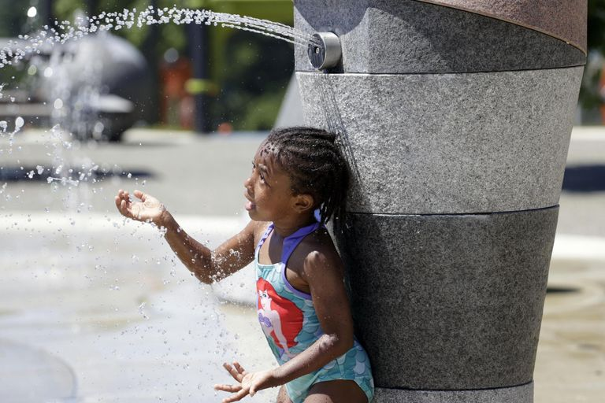
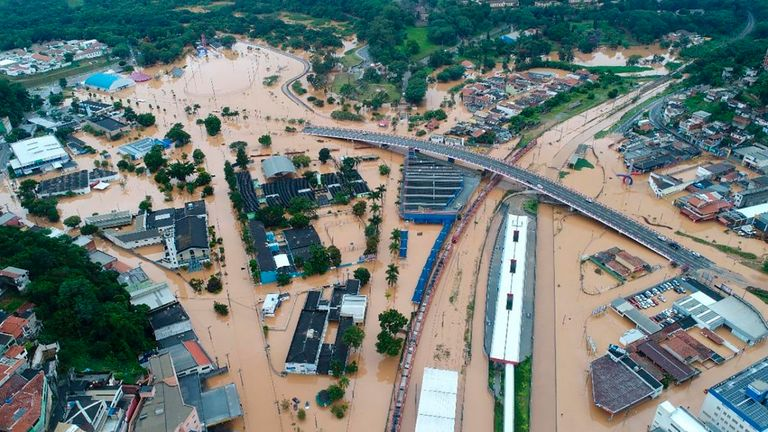
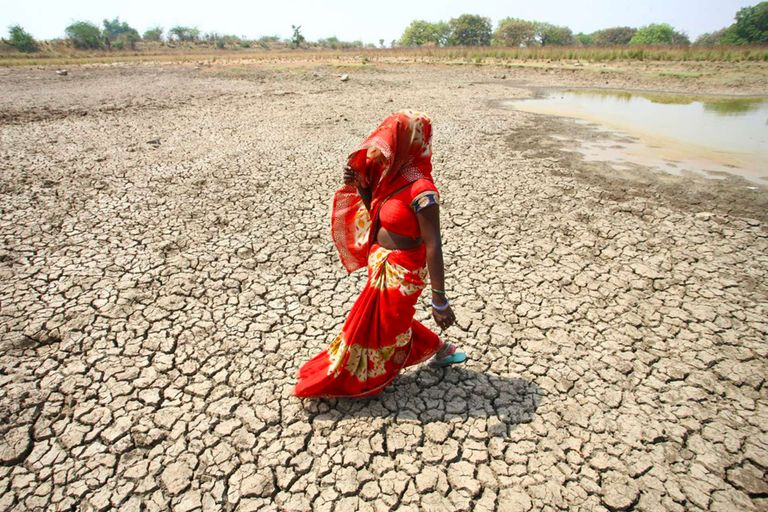

يشهد عام 2022 ضغوطًا متزايدة لاتخاذ إجراءات أكثر طموحًا لمكافحة ظاهرة الاحتباس الحراري على الأرض.
يأتي ذلك في الوقت الذي يحذر فيه محللو سياسة المناخ من أن الهدف الأكثر طموحًا لاتفاقية باريس (أول اتفاق عالمي بشأن حماية المناخ) المتمثل في الحد من الاحتباس الحراري إلى 1.5 درجة مئوية يزداد صعوبة.
تغير المناخ.. التهديدات والدول الأكثر تعرضاً للخطر (إنفوجراف)
وقالت إنجر أندرسن وكيل الأمين العام للأمم المتحدة والمدير التنفيذي لبرنامج الأمم المتحدة للبيئة، إن عام 2022 يدور كله حول التحول إلى "وضع الطوارئ".
ويتوقع خبراء الأمم المتحدة أن تكون بعض قضايا المناخ والطبيعة على رأس الأولويات هذا العام مثل خفض الانبعاثات ودفع تكاليف الخسائر والأضرار المناخية.
وتشير التوقعات إلى أن الانبعاثات العالمية في عام 2030 ستظل تقريبًا ضعف ما هو مطلوب للحد من ارتفاع درجة الحرارة إلى 1.5 درجة مئوية.
وضربت مجموعة من الكوارث البيئية العالم في أول 7 أشهر من عام 2022، بما في ذلك هطول أمطار غزيرة وفيضانات في البرازيل وإيران ومدغشقر والهند وبنجلاديش، فضلا عن تساقط الثلوج بغزارة في تركيا وباكستان والولايات المتحدة الأمريكية والشرق الأوسط، وحرائق غابات في إسبانيا والأرجنتين، وارتفاع غير مسبوق في درجات حرارة أوروبا، وكذلك انفجارات البركانية في بركان وولف في الإكوادور ودولة تونغا في المحيط الهادئ.
وتسببت الأحداث المناخية القاسية من موجات الحر الحارقة إلى هطول الأمطار الغزيرة بشكل غير عادي في اضطرابات واسعة النطاق في جميع أنحاء العالم هذا العام، مع مقتل الآلاف وتشريد الملايين.
في الأشهر الماضية، تسببت الأمطار الموسمية في حدوث فيضانات كارثية في بنجلاديش، كما اجتاحت موجات الحر الشديدة أجزاء من جنوب آسيا وأوروبا. في غضون ذلك، ترك الجفاف الذي طال أمده الملايين على شفا المجاعة في شرق أفريقيا.
في هذا التقرير تستعرض "العين الإخبارية" أبرز الاحداث المناخية وتأثيراتها خلال هذا 2022.
موجات حر غير مسبوقة
نشر فريق من علماء المناخ، دراسة في مجلة Environmental Research: Climate، وتضمنت فحص الدور الذي لعبه تغير المناخ في أحداث الطقس الفردية على مدار العقدين الماضيين.
وقال المؤلف المشارك في الدراسة بن كلارك، عالم البيئة في جامعة أكسفورد: "تقريباً كل موجات الحر في جميع أنحاء العالم أصبحت أكثر شدة وأكثر احتمالاً بسبب تغير المناخ".
بشكل عام، فإن احتمالية حدوث الموجة الحارة التي كانت فرصة حدوثها في السابق 1 من إلى 10 هي الآن تقريبًا ثلاثة أضعاف - وتبلغ ذروتها عند درجات حرارة أعلى بحوالي درجة مئوية واحدة - مما كانت ستحدث بدون تغير المناخ.
موجة الحر التي حدثت في أبريل/نيسان 2022 والتي شهدت ارتفاع درجات الحرارة فوق 50 درجة مئوية في الهند وباكستان، على سبيل المثال، زاد احتمال حدوثها 30 مرة بسبب تغير المناخ.
وقال المؤلف المشارك فريدريك أوتو، أحد علماء المناخ الذين يقودون التعاون البحثي الدولي World Weather Attribution (WWA)، إن موجات الحر عبر نصف الكرة الشمالي في يونيو/ حزيران 2022 من أوروبا إلى الولايات المتحدة الأمريكية تسلط الضوء على "بالضبط ما تظهره ورقتنا الاستعراضية.. لقد ارتفع تواتر موجات الحر كثيرًا".
هطول أمطار شديدة وفيضانات
في النصف الأول من عام 2022 شهدت الصين فيضانات واسعة النطاق، بعد هطول أمطار غزيرة، في الوقت نفسه تعرضت بنجلاديش لأمطار شديدة أدت إلى حدوث فيضانات.
بشكل عام، أصبحت نوبات هطول الأمطار الغزيرة أكثر شيوعًا وأكثر كثافة، وذلك لأن الهواء الأكثر دفئًا يحتفظ بمزيد من الرطوبة، لذا فإن سحب العاصفة "أثقل".
وقالت الدراسة إن التأثير يختلف باختلاف المنطقة، حيث لا تتلقى بعض المناطق ما يكفي من الأمطار

هطول أمطار شديدة وفيضانات
بشكل عام، أصبحت نوبات هطول الأمطار الغزيرة أكثر شيوعًا وأكثر كثافة، وذلك لأن الهواء الأكثر دفئًا يحتفظ بمزيد من الرطوبة، لذا فإن سحب العاصفة "أثقل".
وقالت الدراسة إن التأثير يختلف باختلاف المنطقة، حيث لا تتلقى بعض المناطق ما يكفي من الأمطار.

موجات جفاف مدمّرة
يواجه العلماء صعوبة في معرفة كيفية تأثير تغير المناخ على الجفاف.
وعانت بعض المناطق من الجفاف المستمر، فبحسب الدراسة فإن درجات الحرارة الأكثر دفئًا في غرب الولايات المتحدة، على سبيل المثال، تذوب الجليد بشكل أسرع وتؤدي إلى التبخر.
وبينما لا يزال الجفاف في شرق أفريقيا مرتبطًا بشكل مباشر بتغير المناخ، يقول العلماء إن الانخفاض في موسم الأمطار الربيعي مرتبط بالمياه الأكثر دفئًا في المحيط الهندي، وهذا يتسبب في هطول الأمطار بسرعة فوق المحيط قبل الوصول إلى القرن، وفقا لموقع thehindu.

تفاقم حرائق الغابات
تؤدي موجات الحر وظروف الجفاف أيضًا إلى تفاقم حرائق الغابات، لا سيما الحرائق الضخمة التي تحرق أكثر من 100000 فدان.
واندلع حريق في أنحاء ولاية نيومكسيكو الأمريكية في أبريل/ نيسان، بعد أن خرج حريق خاضع للرقابة في ظل "ظروف أكثر جفافا مما هو معروف" عن السيطرة، ووفقا لخدمة الغابات الأمريكية احترق 341000 فدان
.
على المستوى العالمي، لم يزد تواتر العواصف ومع ذلك، فإن الأعاصير أصبحت الآن أكثر شيوعًا في وسط المحيط الهادئ وشمال المحيط الأطلسي، وأقل من ذلك في خليج البنغال، غرب شمال المحيط الهادئ وجنوب المحيط الهندي، حسبما ذكرت الدراسة.
هناك أيضًا أدلة على أن العواصف الاستوائية أصبحت أكثر حدة بل وتوقفت في البر، حيث يمكن أن توفر المزيد من الأمطار على منطقة واحدة.
لذا في حين أن تغير المناخ ربما لم يجعل من المرجح أن يكون إعصار باتسيراي (أقوى إعصار مداري في جميع أنحاء العالم في عام 2022) قد تكوّن في فبراير/ شباط ، فمن المحتمل أنه جعله أكثر كثافة، وقادرًا على تدمير أكثر من 120000 منزل عندما ضرب مدغشقر.
تقلب درجات الحرارة
في أمريكا دمرت الفيضانات الهائلة جسورا في مونتانا ووايومنج، واكتسحت المنازل، وأجبرت أكثر من 10000 زائر من متنزه يلوستون الوطني على الفرار.
وفقدت نصف مليون أسرة في البحيرات العظمى ووادي أوهايو الكهرباء في وقت سابق من هذا الأسبوع بعد هبوب عواصف رعدية عنيفة.
ودفعت موجة الحر التي سجلت رقما قياسيا درجات الحرارة إلى ثلاثة أرقام من نبراسكا إلى ساوث كارولينا، تاركة أكثر من 100 مليون أمريكي تحت التحذيرات من الحرارة وتقتل ما لا يقل عن 2000 رأس من الماشية في كانساس.
وقبل دخول الموعد الرسمي للصيف، أصبحت البلاد بالفعل محمومة ومليئة بالمعاناة، الطقس القاسي هناك بدأ مبكرا.
قالت راشيل ليكر، عالمة المناخ الرئيسية في UCS، وهي مجموعة بحثية: "لقد أصبح الصيف موسم الخطر حيث ترى هذه الأحداث مبكرًا وبشكل متكرر ومتزامن".
وفي أوروبا، اجتاحت حرائق غابات مميتة مساحات شاسعة هذا الأسبوع بسبب موجات الحر، ما أسفر عن مئات القتلى وفرار الآلاف من منازلهم.
وبحسب بيانات أصدرها نظام معلومات حرائق الغابات الأوروبية التابع لبرنامج مراقبة الأرض للاتحاد الأوروبي "كوبرنيكوس"، تخطّت المساحات التي اجتاحتها النيران في الأسابيع الأخيرة في أوروبا المساحة الإجمالية للأراضي المُحترقة خلال عام 2021 بأكمله.
ولفت العلماء إلى أن الأمور قد تزداد سوءا في السنوات المقبلة مع اشتداد تغير المناخ ما لم يتم اتخاذ تدابير مضادة.